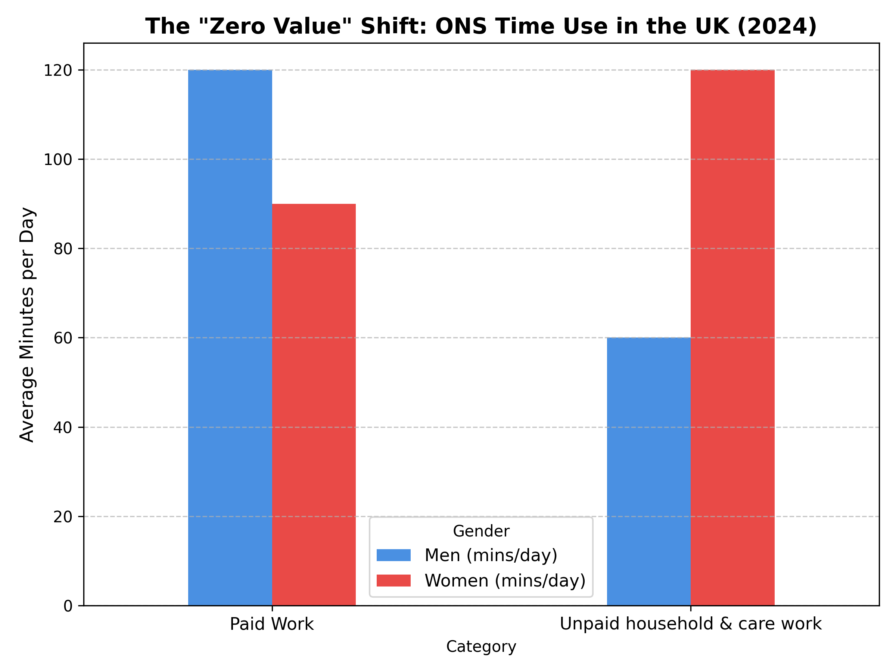
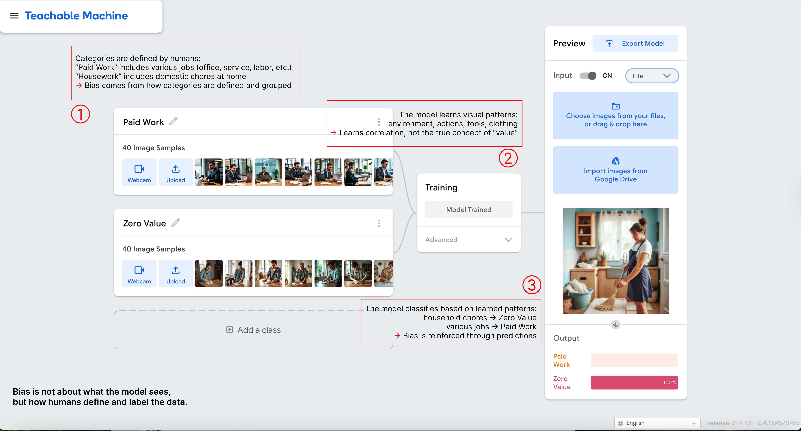
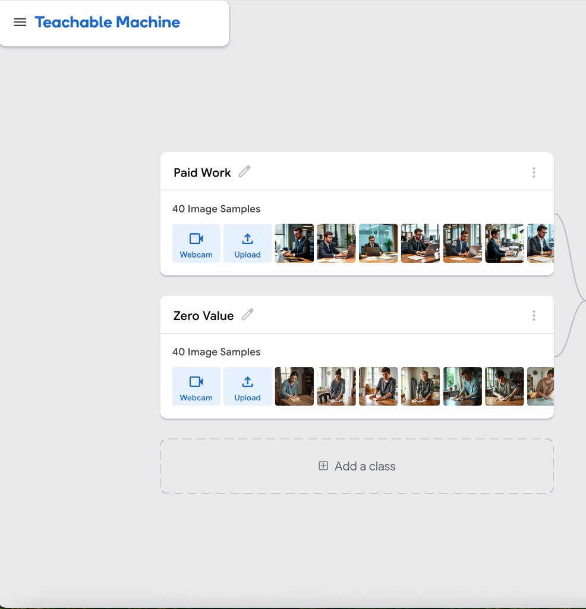
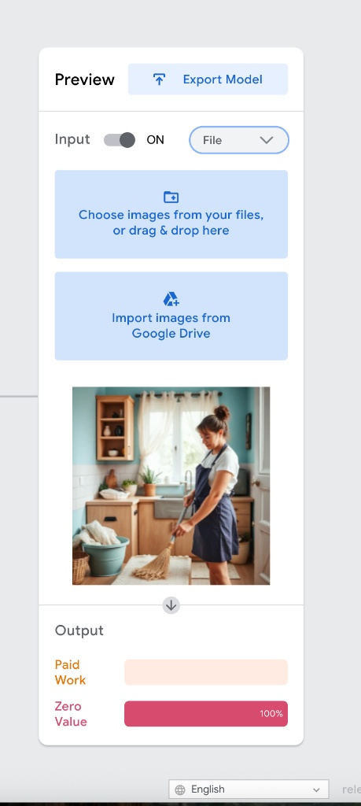
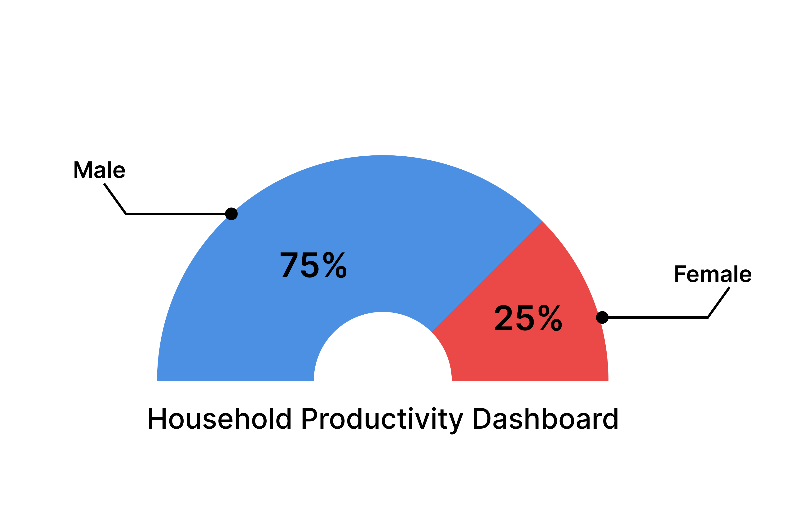
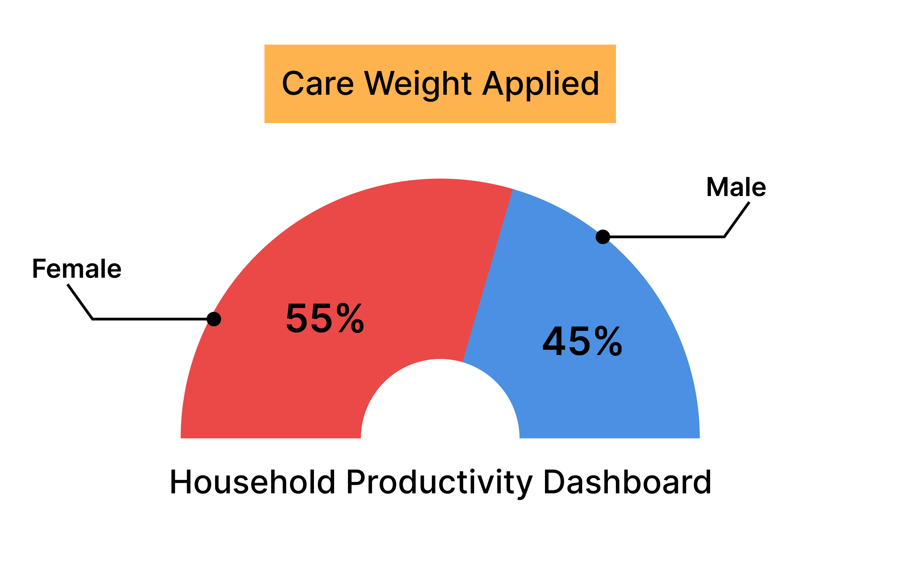

How computational systems erase women's domestic labour in dual-income households.
What is missing from official productivity data? Most systems only capture activities that generate measurable economic value. According to filtered ONS time-use data, women spend significantly more time on unpaid domestic labour than men. However, because this work is not digitally tracked or economically valued, it is effectively excluded from the data pipeline.

Evidence 01: Filtered ONS data shows that women spend substantially more time on unpaid labour than men.
Click to explore image samples from each category
To demonstrate how bias is written into data, I constructed a dataset using Teachable Machine. Images were generated using DeepAI across a range of scenarios, including different types of paid work and household labour.
Importantly, no gendered terms (such as “man” or “woman”) were used in the prompts. However, the generated results revealed a pattern: images of paid work were predominantly male, while domestic scenes were more often female.
The dataset was then organised into two categories: Class 1: Paid Work and Class 2: Zero Value. This setup reflects how human-defined categories can embed assumptions into the data itself.

As shown in the diagram below, the model does not understand “value”. It learns visual patterns — such as environment, actions, and tools — and maps them to the given labels, effectively reproducing the bias already present in the dataset.

Evidence 02 & 03: Dataset construction and bias formation process.
Once trained, the model produces highly confident predictions. When presented with an image of someone performing domestic labour, the system classifies it as “Zero Value” with near certainty.
This confidence does not reflect true understanding, but rather the limitations of the dataset. The model appears certain, while in fact reproducing a simplified and biased definition of value.

Evidence 04: Domestic labour classified as 100% "Zero Value".
This bias extends beyond the model into the interface. Based on the classification process above, the system generates a “Productivity Score” for a dual-income household.
Because unpaid domestic labour is excluded, the interface presents one side — typically paid work — as more valuable. In this way, existing inequalities are not only preserved, but presented as objective and data-driven.

Evidence 05: The default interface hides domestic contributions.
This intervention does not aim to directly change social structures, but to make hidden contributions visible. By assigning value to previously ignored domestic labour, the system produces a different outcome.
Compared to the original version, the adjusted interface reveals the extent of women's contributions within the household. What was previously labelled as “Zero Value” is now recognised as meaningful work.
At the same time, this contrast highlights how bias exists in the original data and system design.

Evidence 06: Re-weighting reveals hidden labour and exposes bias.
| Stage | What Happens | Where Bias Enters |
|---|---|---|
| Data Collection | Images are generated and grouped into categories (Paid Work vs Zero Value) | Human-defined labels and dataset composition embed assumptions about value |
| Model Training | The model learns visual patterns (environment, actions, tools) | Correlation is mistaken for meaning; “value” is reduced to visual cues |
| Prediction | The model outputs confident classifications | Bias becomes reinforced and appears objective |
| Interface | Results are visualised as scores and comparisons | Hidden labour is excluded, making inequality look neutral and data-driven |
This project is not about fixing a model, but about exposing a process. By reconstructing each stage from data to interface, the project shows how bias is gradually introduced, reinforced, and presented as truth.
The intervention does not resolve inequality, but makes it visible. By re-weighting what counts as “value”, the system reveals contributions that were previously ignored, and highlights how data-driven systems can quietly inherit human assumptions.